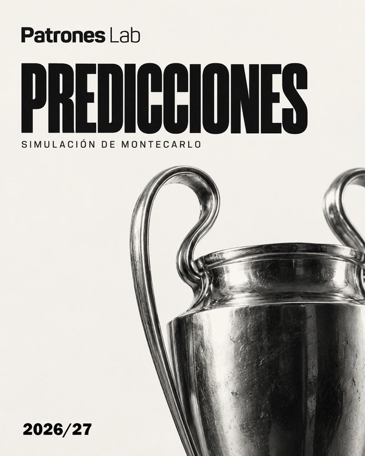

1
 Power BI
Power BI Đám mây QlikLooker Studio
Đám mây QlikLooker Studio Máy chủ SQL
Máy chủ SQL
Khám phá
Bối cảnh và mục tiêuTìm hiểu vấn đề, quyết định cần cải thiện, những người dùng liên quan và kết quả mong đợi.
Phân tích dữ liệu
Patrones Lab là phòng thí nghiệm phân tích dữ liệu về những hiện tượng thực tế trong đời sống hằng ngày.
Tại đây, các dự án độc lập được xây dựng từ dữ liệu công khai, tập trung vào việc nhận diện quy luật, mô tả hành vi và trình bày các phát hiện trong bối cảnh của chúng.
Mục tiêu là đặt câu hỏi, chuẩn bị dữ liệu, xây dựng các phân tích rõ ràng và trình bày kết quả trực quan.

Tôi là Malcolm Di Pietro Cagliari, chuyên gia toán bảo hiểm và chuyên gia về dữ liệu và phân tích. Sự nghiệp của tôi kết hợp Business Intelligence, báo cáo công ty, lập mô hình dữ liệu và phân tích dự đoán, với kinh nghiệm trong các lĩnh vực như ngân hàng, bảo hiểm và vận tải hàng không.
Tôi chuyên về kết nối nhu cầu kinh doanh với các giải pháp dựa trên dữ liệu: xác định KPI, cấu trúc thông tin, xây dựng trang tổng quan và phát triển mô hình giúp hiểu rõ hơn những gì đang xảy ra và đưa ra quyết định trong bối cảnh rộng hơn.
Tìm hiểu vấn đề, quyết định cần cải thiện, những người dùng liên quan và kết quả mong đợi.
Xác định các nguồn có sẵn, nguồn gốc, tính cập nhật, độ tin cậy và những hạn chế chính.
Sắp xếp, làm sạch và kết hợp dữ liệu để tạo nền tảng dữ liệu nhất quán và có thể sử dụng được.
Phát triển phân tích, mô hình hoặc bảng điều khiển cần thiết theo mục tiêu đã xác định.
Đánh giá tính mạch lạc, ổn định và phù hợp của kết quả với thực tế kinh doanh.
Tài liệu về công việc cuối cùng, tự động hóa các quy trình định kỳ và xem xét phản hồi để cải tiến trong tương lai.
Tuyển chọn các dự án thực hành sử dụng dữ liệu công khai, có phương pháp và kết quả trực quan. Dùng bộ lọc để khám phá theo lĩnh vực, công cụ hoặc loại sản phẩm.

Phân tích giao thông hàng không ở Tây Ban Nha với dữ liệu công khai từ AENA, tập trung vào khối lượng, mô hình theo sân bay và sự khác biệt giữa các danh mục.

Phân tích thăm dò các chỗ ở Airbnb tại Luân Đôn để so sánh giá, loại chỗ ở, tình trạng còn phòng, thời gian lưu trú tối thiểu và sự khác biệt giữa các khu phố.

Phân tích các chuyến đi bằng taxi ở Chicago để nghiên cứu thời gian, nhu cầu, phân bổ không gian địa lý và mô hình hoạt động.

Mô hình phân loại bằng hồi quy logistic để xác định các tin đăng có giá tương đối cao hoặc thấp trong từng loại chỗ ở.

Bảng điều khiển tương tác trong Looker Studio để khám phá các chuyến đi bằng taxi ở Chicago, các chỉ số hoạt động, mô hình hàng giờ và các tuyến đón trả khách.

Mô hình hồi quy logistic ước tính xác suất ghi bàn của từng cú sút bằng dữ liệu công khai từ StatsBomb, được kiểm định theo trận đấu và áp dụng cho World Cup Qatar 2022.
Xem dự án
Mô hình xác suất về mức độ đe dọa kỳ vọng trong bóng đá, sử dụng dữ liệu công khai của StatsBomb. Mô hình ước tính xác suất ghi bàn trong năm hành động tiếp theo.

✅ đã xuất bản
Phân cụm không giám sát bằng K-means để phát hiện gian lận thẻ tín dụng.

✅ đã xuất bản
Phân loại được giám sát bằng cách sử dụng hồi quy logistic để phát hiện gian lận thẻ tín dụng.

✅ đã xuất bản
Phân cụm không giám sát với DBSCAN để xác định khả năng gian lận thẻ tín dụng.
Xem dự án
Phân tích số liệu thống kê từ World Cup 2022 với dữ liệu công khai từ StatsBomb, nhằm mục đích tóm tắt màn trình diễn của từng cá nhân và so sánh các cầu thủ bằng cách sử dụng radar phân vị.

Phân tích không gian địa lý của các chuyến đi bằng taxi ở Chicago, nhằm mục đích phát hiện các khu vực có hoạt động lớn nhất, các tuyến đường đô thị và nhu cầu tập trung theo lãnh thổ.

Bảng điều khiển tương tác Power BI về Spotify Charts để phân tích lượt nghe, thứ hạng, xu hướng theo thời gian và sự phân bố âm nhạc theo khu vực.

✅ đã xuất bản
Báo cáo tương tác trong Power BI để phân tích chi tiêu với nhà cung cấp, diễn biến hàng tháng, phân bổ theo danh mục, tiết kiệm và phân bổ theo địa lý.

Mô phỏng một triệu kịch bản World Cup 2026 với xếp hạng Elo để ước tính xác suất lọt vào bán kết, thi đấu trận chung kết và giành chức vô địch.

Mô hình phân loại để ước tính thiệt hại kinh tế trong các sự kiện khí tượng, so sánh hồi quy logistic với mạng lưới thần kinh.

Phân tích không gian địa lý về giá Airbnb tại Luân Đôn dựa trên khoảng cách đến trung tâm, các khu phố và chỉ số lân cận địa lý.

Mô phỏng một triệu kịch bản LaLiga 2026/27 với xếp hạng Elo để ước tính xác suất đạt được kết quả quan trọng nhất của giải vô địch.

Mô hình bàn thắng theo phân bố Poisson để tính sức mạnh tấn công và phòng thủ của mỗi đội, kết hợp với mô phỏng Monte Carlo để ước tính xác suất các kết quả của giải đấu.
Mô phỏng một triệu kịch bản Nations League 2026/27 với xếp hạng Elo và mô hình bàn thắng dựa trên phân bố Poisson để ước tính xác suất đứng đầu bảng, tiến sâu ở vòng loại trực tiếp và giành chức vô địch.

Mô hình nhị thức để phân tích xác suất ghi bàn và kết quả từ các cú sút cũng như tỷ lệ chuyển đổi của 36 câu lạc bộ ở Champions League 2026/27.
Dành cho các cơ hội nghề nghiệp, hợp tác phân tích hoặc các dự án BI · ML · Bảng điều khiển.
email: malcolm@patroneslab.com
Hãy viết thư cho tôi và tôi sẽ trả lời bạn sớm nhất có thể.